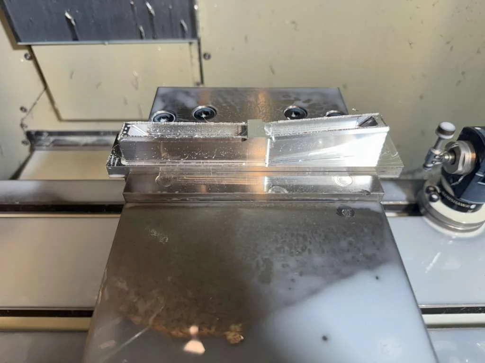

From the team
Latest
updates.
Flight reports, project news and events.
Recent updates.
2026 · ProgrammePreparing for our next flight+
Our next airframe was presented at the Great Exhibition Road Festival. The programme moves from airframe manufacture into system integration, ground testing and preparations for flight.
The published roadmap set out ground testing in August and a maiden flight campaign in September. These are programme targets; a flight report will follow once the next flight has taken place.
See the aircraft →2026 · OutreachOur aircraft at the Great Exhibition Road Festival+
We brought our latest airframe to the Great Exhibition Road Festival and welcomed visitors to the stand over two days. Alongside Imperial’s Department of Aeronautics, we shared the work behind the wing, lightweight structure and solar flight programme.
The event also gave us the opportunity to introduce the team and talk about the next stages of development.
More from the team on LinkedIn ↗